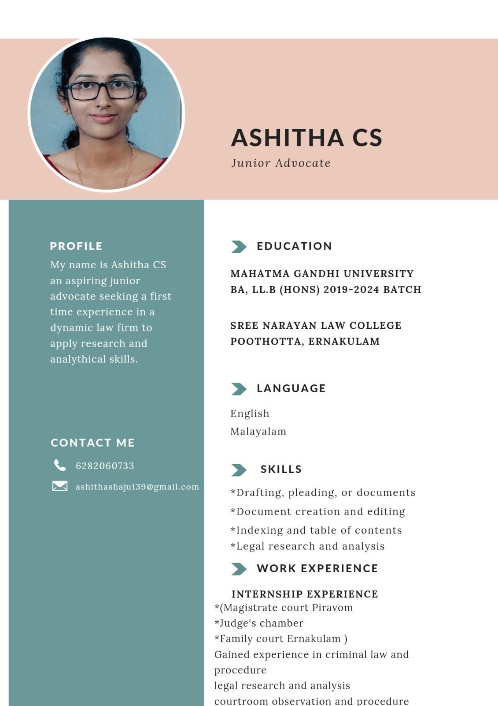

A dedicated BA, LL.B (Hons) graduate actively practising in the Kerala High Court, Kolenchery Court, Muvattupuzha Court, and Chottanikkara Court. Specializing in legal drafting, meticulous research, and client-focused litigation.
As a practising advocate, I represent clients before the Kerala High Court and sub-ordinate courts in Kolenchery, Muvattupuzha, and Chottanikkara. I am committed to bridging the gap between complex legal provisions and practical, strategic courtroom solutions. Guided by a solid academic background and diverse courtroom exposure, I handle legal disputes with diligence and ethical responsibility.
With a strong background in legal research, drafting, and trial strategy, I prepare comprehensive notice pleadings, briefs, petitions, and legal opinions. I strive to provide clear advocacy and solid legal support to achieve favorable outcomes for clients.
Sree Narayana Law College, Poothotta, Ernakulam
Mahatma Gandhi University
2019 - 2024 BatchDeveloping a solid understanding of trial procedures, bail processes, and examination under IPC, CrPC, and the Indian Evidence Act.
Gaining insights into family court structures, dissolution of marriages, custody disputes, and legal mediation.
Proficient in conducting comprehensive legal research, analyzing precedents, and briefing cases for senior counsels.
Creating professional documents, keeping record indexes clean, and ensuring layout/structural accuracy in briefs.
Observed administrative workflows and dispute redressal processes at the local self-government level.
Analyzed judicial processes, trial monitoring procedures, and criminal litigation under lower judiciary jurisdiction.
Focused on compensation claims, insurance liability disputes, and personal injury case analysis.
Studied revenue litigation, tenancy reforms, and verification of land registration records.
Observed local municipal administrative practices, licensing disputes, and legal drafting for public utility operations.
Studied non-adversarial conflict resolution methods, mediation techniques, and settlement drafting.
Analyzed complex appellate litigation, formulated case summaries, and conducted in-depth legal research for a High Court judge.
Examined domestic disputes, reconciliation proceedings, child custody arguments, and alimony claim cases.
Digging deep into statutes and case files to extract crucial precedents and hidden arguments.
Drafting with concise grammar, logical formatting, indices, and adherence to court guidelines.
Presenting logical assessments, legal briefs, and client reports with complete clarity.
Upholding client confidentiality, legal codes, and judicial values above all else.

Whether you require legal representation, advisory services, or professional drafting/research support in the High Court or subordinate courts, reach out today.
{kind=link}